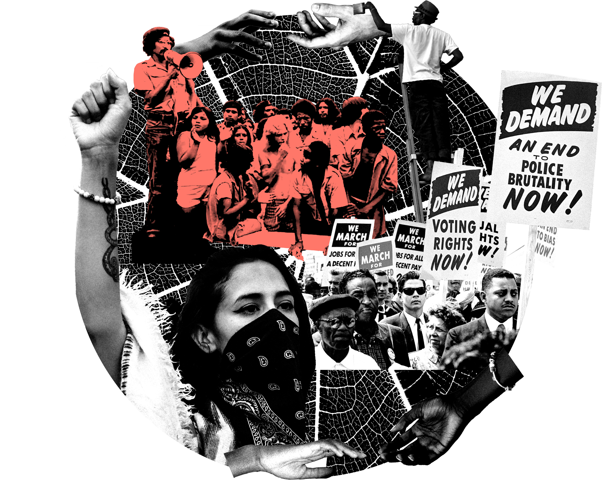
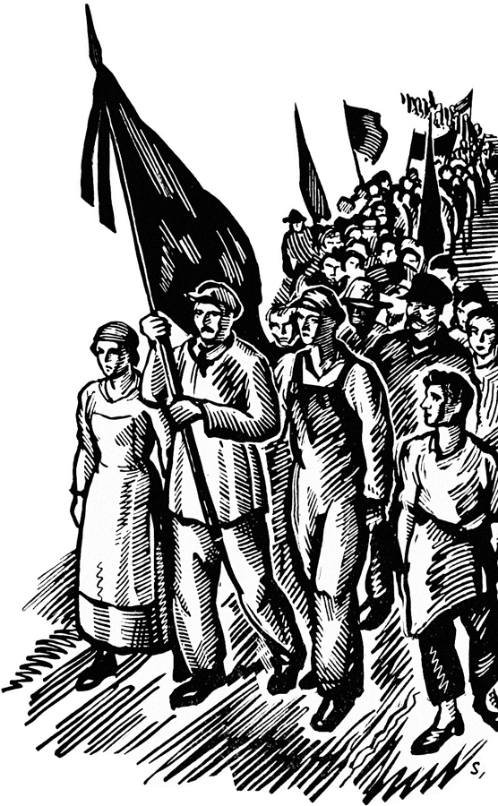
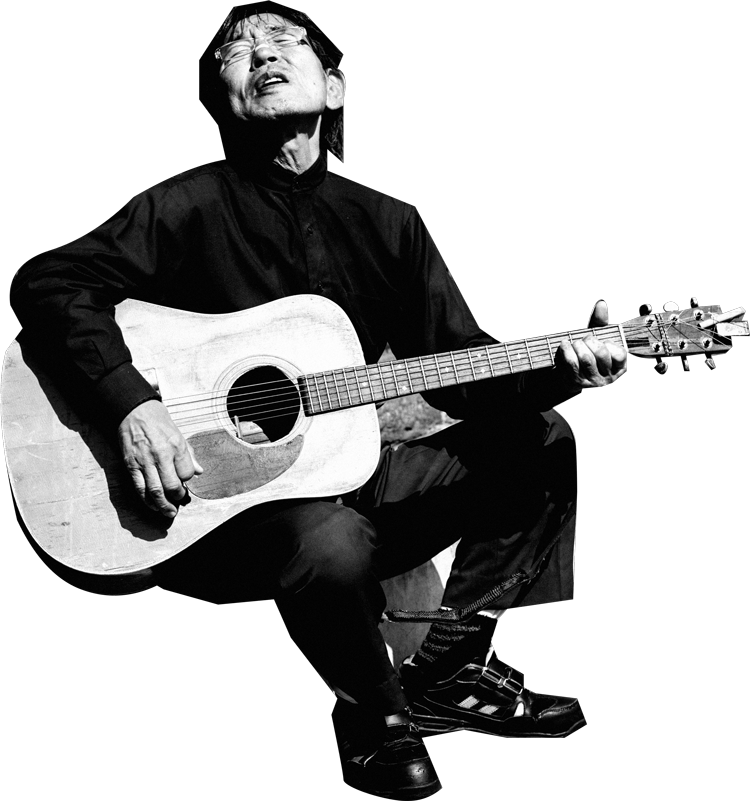

Community
Organizing

A Future Led by the People
Community organizing is the very foundation for building a better world. Human civilization must learn how to connect, empathize, and engage in civil discourse in order to create positive change.
…if we’re all intrinsically connected, how is one of us an enemy?… — Jason Killinger
…we need to spend more time with each other… — Dr. Kimia Pourrezaei
…we have the money, we have the systems in place. I truly believe it’s innate for the majority of us to want to help each other… — Nicole Rodill
…people need community, people need each other to be able to organize for a better life… — Katie Hinchey-Wise, MSc
…love is the answer!… — Dr. Kimia Pourrezaei
…in an ideal world, every single action is connected to the totality of all of existence… — Jason Killinger
…all of it is so interconnected. If we keep putting bandaids on all these big issues but not fixing them upstream, I don’t think we’re going to get anywhere… — Valerie Frolova
…we cannot tear down these systems until we have systems to replace them with. Right now I don’t see us with lush systems, but I do see us all learning… — Katie Hinchey-Wise, MSc
…we noticed that we could really tolerate a lot of time with one another… — Anonymous
…if there was a situation where I gave you a meal and you didn’t pay for it, when we leave each other and go to our respective homes we’re still in a relationship. It’s not about personal debts, it’s about a sense and feeling of community… — Jason Killinger
…we want to take care of each other. If we lean into that structure that’s already there and take away all the bullshit, we could actually do that… — Nicole Rodill
…it all starts with human-centered design, really opening up to what the community needs in order to fix a situation…partner with the community to work with them to make change… — Marion Leary
…participatory design is one of our best approaches to design work because we’re able to say ‘tell us what you want and how you want to see it’ when it’s done correctly or when it’s done in the ways that it was defined. It gives buy-in, it addresses what people are actually wanting and saying they need. It’s just as simple as tearing down these concepts of power and who has it… — Dr. Christina Harrington
…I hope we can see some better examples of how we can utilize resources in a design space, because we are the ones who are going to be visually bringing it to life… — Sadie Red Wing
…to whoever thinks it’s not the right time to talk about something, it is exactly the right time to talk about it… — Valerie Frolova
…we don’t dispose of people who aren’t ‘productive’ or those who make mistakes or who are trying to correct them. We have to build something that we are all invested in so that we can care for each other… — Anonymous
…people need to have more empathy for each other, take care of their neighborhood and their community… — Valerie Frolova
…the dreaminess is in the everyday… — Lara Durback
…every social movement across history has been intentional. People start social movements… — Katie Hinchey-Wise, MSc
…it has to be the smaller community organizing that’s looking out for the people but who can tap on the next level and say ‘hey, the community needs more money at this point, or we need more housing solutions, or we need more food solutions, or we need mental healthcare solutions’… — Nicole Rodill
…it all comes back to community work and bringing people together in a human-centered approach. How do we mobilize the city and the community? There is no lack of need and no lack of innovative possibilities… — Marion Leary
…the more new young people start guiding our world, we’ll be alright… — Fawziyya Heart
…education is not for and about personhood, it is for the society and to make sure that you fit into a box. Care is to take care of each one of us and to understand how we best flourish in this world. It’s not a mistake that one of those is paid work and one of those is not paid work… — Katie Hinchey-Wise, MSc
…turn the private schools into public schools.… After high school, students should have the whole year to prepare for college or to prepare for what they want — not everyone needs to go to college. If they really want to learn liberal arts, then go. Most people who have liberal arts degrees don’t do much with those degrees… — Anonymous
…our education system would reference history in a real way. It would be radically different, as opposed to starting from the colonized history that we are taught in schools. Our history would start further, before colonization, before white supremacy, we would acknowledge those that came before… — Nicole Rodill
…it comes to being people-oriented and offering your hand when needed. Teachers are definitely those people… — Valerie Frolova
…we had a lot of different types of trade schools. We need fancy code schools, more acting schools, more writing schools… construction — things that a city needs… — Anonymous
…any utopia will be a collective — an organizing, collective care. I think prioritizing each other and working as a collective, we are each other’s safety nets. If I am temporarily disabled, people would not get injured or be in pain, but also that my utopia can dream that it is impossible to break a leg. We as a community aren’t 300 million people all trying to coordinate, but maybe it is smaller communities trying to coordinate… — Anonymous
…when I think about a world without money though I do also think for myself, what I think is most likely is that I start or join a collective of people who are on land that they are in charge of and they go more off the grid… — Katie Hinchey-Wise, MSc
…if you have a child you could take them to a neighbor if you have a work thing, or if you have a dog you could ask your neighbor two blocks down to check on your dog… — Valerie Frolova
…put the power in the hands of the people in the communities to say ‘what do you need? What do you need to see? How would you like to see it?’…It’s as simple as asking people and putting people at the helm of their own movements… — Dr. Christina Harrington
…genuinely going and talking to people is some of the hardest work there is and it’s so much easier to scream on the phone at my senator than it is to ask my second cousin who works for city council ‘what’s going on with the budget this year?’ or how it works. That it’s the hardest work to do makes it the most important… — Katie Hinchey-Wise, MSc
…I low-key think that that’s what the government is doing. They’re trying to take up the space in our minds so we have no time to think about what our lives could look like outside of this. You don’t have no time for this shit. Who has time to plan a utopian fucking world? Well you do. But you know what I mean!… — Fawziyya Heart
…it’s going to make it a lot easier for people to share some outrageous but bright moments, to shatter what we had thought possible… — Jeanne Laïka
…when I think about the future and where we would start to make things better, the simplest thing that I wish we did in this country, and a lot of other countries do this land acknowledgement…if I have a story that can impart ‘this is how it is for everyone else — that’s your world experience, but this is brown and Black peoples’ experiences’… Regardless of how upsetting that story might be for me, I have to put it on the table, because without people hearing those stories, they have no point of reference. Land acknowledgement is the simplest way of putting a big story on the table for everyone… — Nicole Rodill
…why don’t our local news channels give land acknowledgements every morning? These are missed opportunities of educating people that we are still here and still exist… — Sadie Red Wing
…I wish when you typed in a city name on Wikipedia, it had who the original people were in that town, that state, that city, what their history was, and if you wanted to dig deeper on it, you could click through those contextual links and get the rest of the story. When you look at Canadian towns, they have that information. It’s part of the history of those villages and bigger cities. It’s acknowledged. Here, because of white supremacy and society’s inability to acknowledge all evils that have transpired on this land, they don’t do it. They deny it. For the U.S., that’s the most important thing. In parts of the U.S. where they brought large groups of enslaved African people, we know, ‘through historical shipping records’ where those ships came from, we know where the people on those ships were taken from, I think they should give acknowledgement to those people as well… — Nicole Rodill
…‘why do protestors knock over trash cans? Why cause that wanton destruction?’ It's not just about expressing justified anger or pushing back on how private property is valued over lives. People do that in order to set up temporary autonomous zones, where we can hold a space, and use that space to let people talk, especially people who are normally silenced. If you’re able to keep police from invading your space on the street, you are able to have people, not just in your little bloc but people of the public outside of your space, letting them come in and hear what’s going on, getting different perspectives… — Jeanne Laïka
…we only can go up from here y’all… — Fawziyya Heart
Next: Organize


